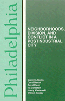

The city's history told on its own terms
The city's history told on its own terms


 The city's history told on its own terms
The city's history told on its own terms

|  |
PhiladelphiaNeighborhoods, Division, and Conflict in a Post-Industrial CityCarolyn Adams, David Bartelt, David Elesh, Ira Goldstein, Nancy Kleniewski and William Yanceypaper EAN: 978-1-56639-078-1 (ISBN: 1-56639-078-8) |
"[This book] is an exploration, by a team of geographers and sociologists, of the effects of national economic trends on one Rust Belt city…. The book offers a detailed description of the city's history and current condition, including race relations."
—Planning
Philadelphia is a patchwork of the political and economic changes dating back to 1683. Having been re-created repeatedly, each era of the city's development includes elements of the past. In this book, the authors describe the city's evolution into a post-industrial metropolis of old communities and newly expended neighborhoods, in which remnants of 19th-century industries can be seen in today's residential areas.
This book explores a wide range of issues impacting upon Philadelphia's post-industrial economy—trends in housing and homelessness, the business community, job distribution, a disintegrating political structure, and increased racial, class, and neighborhood conflict. The authors examine the growth of the service sector, the disparity in the city's urban renewal program that has enriched center city but left most neighborhoods in need, and they evaluate the realistic prospects for regional solutions to some of the problems facing Philadelphia and its suburbs.
Excerpt available at www.temple.edu/tempress
"The multidisciplinary team of locally active urban researchers assembled for this book concisely explores and interrelates issues of uneven intra-urban development, white middle-class suburbanization, residential segregation of races and social classes, disinvestment, minority political power, and the concentration of nonwhites and the poor as they apply in the Delaware Valley metropolitan area. Four decades ago, Philadelphia was viewed as a model of urban renewal; its subsequent economic decline and the intensifying divisions that bedevil its social fabric dominate this thoughtful analysis.... Bibliographic notes are a thorough and up-to-date guide to the considerable scholarly literature on this metropolis. Tables, graphs, and more than a dozen excellent maps further enhance the presentation. Highly recommended."
—Choice
List of Tables and Figures
Preface
Series Preface
1. The Legacy of the Industrial City
Population and Settlement Patterns •
Machine Politics in the Industrial Era •
The Transition to Postindustrialism •
Declining Economic Opportunity and Racial Conflict •
The Central Argument of the Book
2. Economic Erosion and the Growth of Inequality
The National Context •
Philadelphia's Special Vulnerability to National Trends •
The Changing Distribution of Jobs in the Postindustrial Economy •
The Changing Earnings Profile •
Who Gains? Who Loses? •
Workforce Participation •
Family Wage Earners •
Conclusion
3. Housing and Neighborhoods
Housing in Philadelphia: An Overview •
Housing Conditions at the End of World War II •
Postwar Reorganization •
The Decline of the City: Despair and Exodus, 1955-1975 •
The Paradox of Revitalization and Decay, 1975-1985 •
Race and the Regional Housing Market •
Housing the City •
Conclusion and Prospects
4. Philadelphia's Redevelopment Process
Continuous Redevelopment •
Why Redevelop? •
Trends in Redevelopment •
Two Case Studies •
The Political Economy of Redevelopment •
The Outcomes: Who Pays? Who Benefits? •
Conclusions
5. Race, Class, and Philadelphia Politics
The Dissolution of the Ruling Postwar Coalition •
Why the Fragmentation? •
The Business Community and Philadelphia Politics •
Populism and Minority Politics •
Conclusion
6. The Prospects for City-Suburban Accommodation
Barriers to Political Cooperation •
Opportunities for Regional Cooperation •
Transportation •
Port Facilities •
Solid Waste •
How Realistic Are the Prospects for Regionalism?
7. Alternative Scenarios for Philadelphia's Future
Appendix A: The Index of Dissimilarity
Appendix B: Economic Transition: Further Data
Appendix C: Income Differentials by Race
Notes
Index
Carolyn Adams teaches in the Geography and Urban Studies Department at Temple University.
David W. Bartelt (1945-2015) was Emeritus Professor of Geography and Urban Studies at Temple University.
David Elesh is Professor of Sociology, Temple University.
Ira Goldstein teaches at the Institute for Public Policy Studies, Temple University.
Nancy Kleniewski teaches Sociology at State University of New York, Geneseo.
William Yancey is Professor of Sociology, Temple University.
Urban Studies
Philadelphia Region
Comparative American Cities, edited by Joe T. Darden.
No longer active.
© 2015 Temple University. All Rights Reserved. This page: http://www.temple.edu/tempress/titles/712_reg.html.